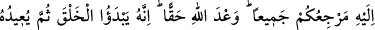
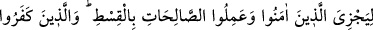
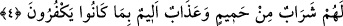

hiçbir mukarreb; yani Allah’ın kendisine yakın kıldığı meleğin ve Allah tarafından
gönderilen hiçbir peygamberin kimseye şefaat edemeyeceğini açıklamış oldu.
Böyleyken aklı ve temyiz kabiliyeti bulunmayan putlar nasıl şefaat edebilir? Bu ifadede
aynı zamanda izin verdiklerinin şefâat edebilecekleri de belirtilmektedir.
“İşte” yani, zikredilen kemal sıfatlarıyla muttasıf, şanı yüce olan demektir. Maddi
olarak Allah’ın gösterilmesi muhal olduğu için buradaki işâret, mecaza hamledilmiştir.
el-Behce isimli eserde şöyle denilir: “Cenab-ı Hak için böyle bir işaret ismi
kullanılması: “O cennet” ifadesi gibidir. Bunun sebebi, Cennetin vasıflarının bilinmesi
sebebiyle sanki gözle görülen bir şeye işaret ediliyor gibi olmasıdır. “Rabb’iniz Allah
budur.”
Kâşifî der ki: “Yani yaratma, idare ve istîlâ sıfatlarıyla mevsuf olan o Allah
Rabbinizdir. Sizi besleyip büyüten O’dur, O’ndan başkası değil.” “O halde O’na kulluk
edin.” Fayda ve zarar veremeyecek olan cansız şeyler bir tarafa O’na melek yahut insan
gibi yarattıklarından bazılarını ortak koşmayın.. “Düşünmüyor musunuz?” Tefekkür
etmiyor musunuz? Çünkü küçük bir düşünme ve inceleme, sizin taptıklarınızın değil
O’nun ibadet ve rubûbiyyete müstehak ve layık olduğu konusunda sizi ikaz eder.
4. Hepinizin dönüşü sadece O’nadır. Bu Allah’ın gerçek olarak verdiği sözdür.
Şüphesiz O önce yaratmaya başlar. Sonra inanıp iyi işler yapanlara adâletle
karşılık vermek için (Onları huzûruna) geri çevirir. İnkâr edenlere gelince,
küfürlerinden dolayı onlara kaynar sudan bir içecek ve acı bir azâb vardır.
Ölümle ve tekrar dirilmekle “hepinizin dönüşü” başkasına değil “sadece O’nadır.”
O halde O’na kavuşmaya hazırlanın.
et-Te’vîlâtü’n-Necmiyye’de şöyle denilir: “Makbul olan veya olmayan kimsenin de
dönüşü O’nun huzurunadır. Makbul olanın dönüşü “Rabb’ine dön.” (el-Fecr, 89/28)
hitabının tasvir ettiği ilâhî inâyetin cezbeleriyle olur. Bunun hakîkati de kalbin Allah
Teâlâ’ya cezbolunmasıdır.
Netîcesi ise nefsin dünyadan uzaklaşması, nazarında altın ile çamurun bir olması,
kalbin Allah’dan gayrısından (mâsivâ) yüz çevirmesi, ruhun şevk, muhabbet ve
Allah’dan başka şeylerden uzaklaşma denizinde garkolması, sırrın yaratılanlardan
uzaklaşıp hakkın müşâhedesindeki şiddetli muhabbet ve hayretidir.
Kabul edilmeyip reddedilen kişinin dönüşü ise kendi ihtiyârı olmaksızın zincirlere ve
bukağılara vurulmuş, yüzüstü ateşte sürünür vaziyette olacaktır. Bu durum, Allah’ın